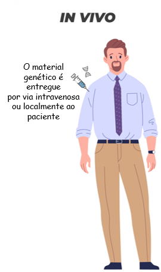
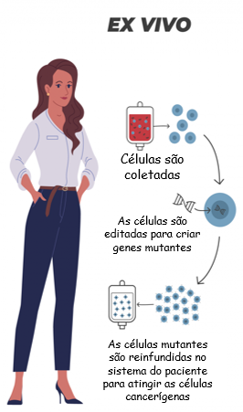
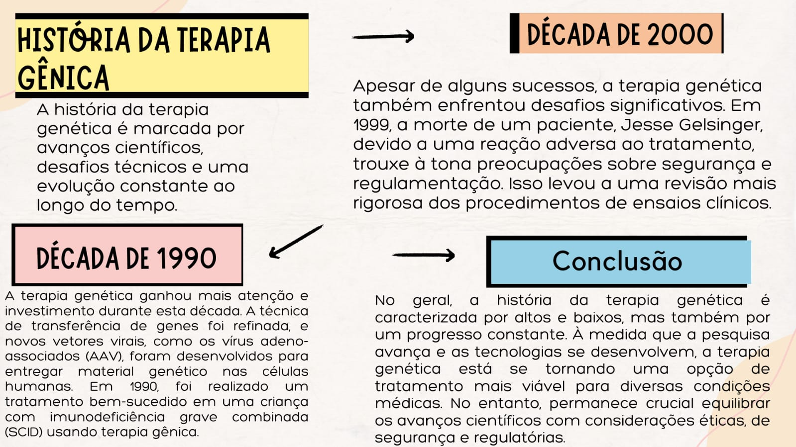
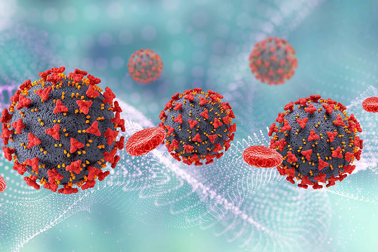

Denomina-se de terapia gênica o tratamento de doenças a partir de modificações no material genético das células. Com essa técnica, é possível colocar genes funcionais em células que possuem genes com defeito e, com isso, acabar com a doença.
Vale destacar que essa técnica pode ser usada não só para modificar genes e tornar a célula saudável, mas também para marcar células, desencadeando resposta imune. Percebe-se, portanto, que, na terapia gênica, não há necessidade de utilização de medicamentos.
Quais as aplicações da Terapia Gênica?
A terapia gênica pode tratar diferentes tipos de condições. Veja algumas das principais aplicações:
Doenças hereditárias e raras - elas podem ser causadas pela mutação de um único gene, como na hemofilia e em doenças metabólicas. Como há somente um gene defeituoso, as chances de a terapia gênica tratar a causa da doença são maiores.
Doenças multifatoriais - podem ser causadas pela mutação de diferentes genes, ter influência do ambiente e/ ou ter causa desconhecida. A terapia gênica visa diminuir ou evitar o avanço de doenças graves e neurodegenerativas, como a doença de Parkinson. O tratamento pode focar nos fatores genéticos de pré-disposição ou gravidade, ou na possibilidade de modificar mecanismos fundamentais ou a estrutura das células, dos órgãos ou sistemas atingidos.
Como o paciente recebe a Terapia Gênica?

Existem duas formas de o material genético ser introduzido
nas células do paciente. Quando as células são isoladas, modificadas
em laboratório e retornadas ao corpo do paciente, a técnica usada
é a ex vivo. Quando os genes são inseridos diretamente nas células
através de um vetor, normalmente um vetor viral, se denomina técnica in vivo.

O que são os vetores na Terapia Gênica?
A terapia gênica é baseada na introdução de genes nas células, seja de forma direta – como na técnica in vivo – seja modificada anteriormente, como na técnica ex vivo. Para que isso ocorra de forma bem-sucedida, é necessário um "veículo", chamado de vetor, para facilitar a entrada do DNA nas células. Existem três categorias principais de vetores, que continuam sendo aprimorados:
Vetores virais - vírus inofensivos ou nocivos, que podem ser manipulados para perder essas características;
Plasmídeos (pequenos segmentos de DNA);
Vetores nanoestruturados (polímeros).
Tipos de Terapia Gênica
A Terapia Gênica pode ser dividida em duas categorias: a somática e a germinal.
Na somática, o gene é inserido em células somáticas e, portanto, não é repassado para as próximas gerações.
A terapia gênica germinal atua em células reprodutivas, afetando o genoma das gerações futuras.

História da Terapia Gênica
Vacinação
A vacinação é uma estratégia fundamental de saúde pública para prevenir doenças infecciosas, e ela está relacionada à terapia genética em algumas maneiras, principalmente quando se trata do desenvolvimento de vacinas inovadoras.
Embora a vacinação e a terapia genética estejam relacionadas, é importante ressaltar que a maioria das vacinas tradicionais não envolve alterações permanentes no DNA ou no genoma do indivíduo, ao contrário de algumas abordagens da terapia genética. As vacinas geralmente são projetadas para estimular a resposta imunológica temporária e específica contra um antígeno enquanto a terapia genética busca corrigir ou alterar genes defeituosos.
A pesquisa e o desenvolvimento de vacinas e terapias genéticas continuam a evoluir, e a intersecção entre essas duas áreas pode levar a avanços significativos no tratamento e prevenção de doenças infecciosas e outras condições médicas.
Terapia Gênica e Covid-19

Embora a terapia gênica não seja uma estratégia dominante no combate à COVID-19, ela desempenhou um papel importante na pesquisa e desenvolvimento de vacinas e tratamentos experimentais. Aqui estão algumas maneiras pelas quais a terapia gênica se relaciona com a COVID-19:
Terapia gênica para fortalecer a resposta imunológica alguns pesquisadores exploraram a terapia gênica como uma maneira de fortalecer a resposta imunológica contra o SARS-CoV-2. Isso poderia envolver a modificação de células imunológicas, como as células T, para direcionar o vírus de maneira mais eficaz. No entanto, essa abordagem ainda está em alcances iniciais de pesquisa.